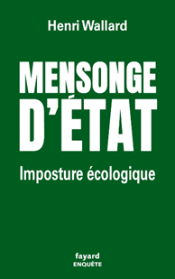

L'État peut-il encore être stratège ?
Henri Wallard – Dîner-débat de la promotion X77, lundi 16 novembre 2026
La nécessité d'un « État stratège » est régulièrement soulignée dans le débat public. Mais quelle en est la réalité ? Dans son récent ouvrage, notre camarade Henri Wallard remet clairement en question cette réalité en critiquant sévèrement la gestion des politiques publiques environnementales et énergétiques en France. Il dénonce notamment une dérive technocratique, des décisions manquant de cohérence à court comme à long terme, et un grave amateurisme, tant dans les décisions stratégiques que dans les mesures qui touchent la vie quotidienne. Il nous présentera les éléments les plus saillants de son analyse et les pistes pour sortir de cette imposture.
Maison des Polytechniciens, 12 rue de Poitiers, 75007 Paris – Salon Chapel (1er étage), attention : ce n'est pas le salon habituel.
19h00 : accueil et apéritif
19h30–20h30 : conférence (en présentiel et en visio)
20h30 : dîner-débat (en présentiel seulement)
Fin de la soirée vers 22h30
Participation : 57 € par personne en présentiel, 10 € en visio. Inscriptions jusqu'au 12 novembre 2026. Pour la visio, pensez à indiquer votre adresse e-mail : le lien sera envoyé aux inscrits quelques jours avant la conférence.